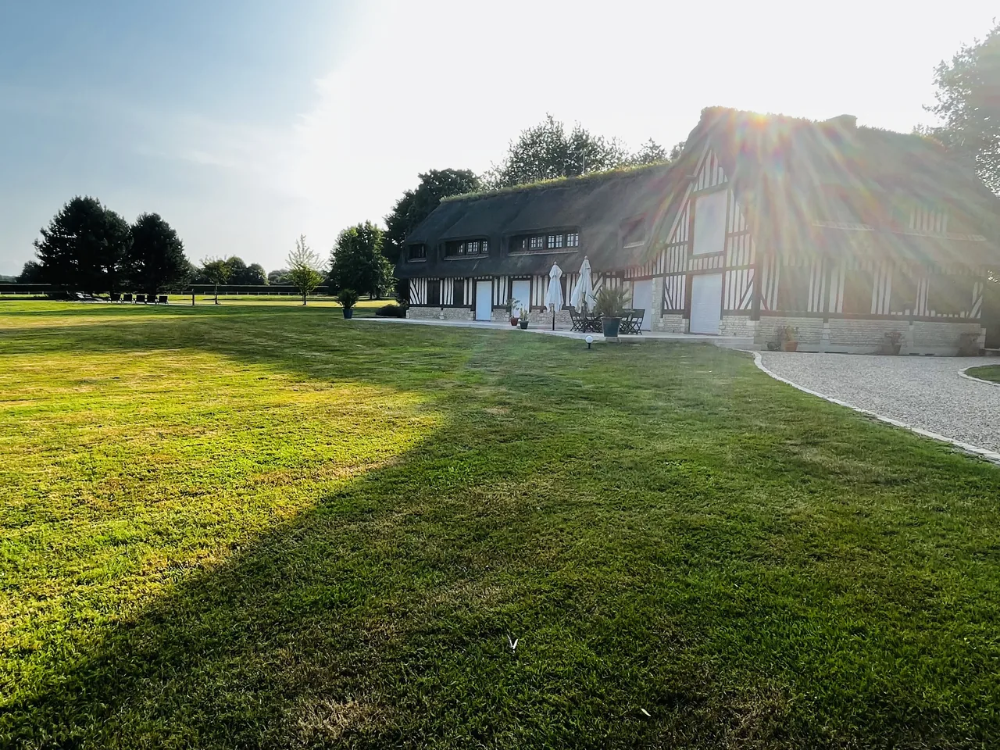
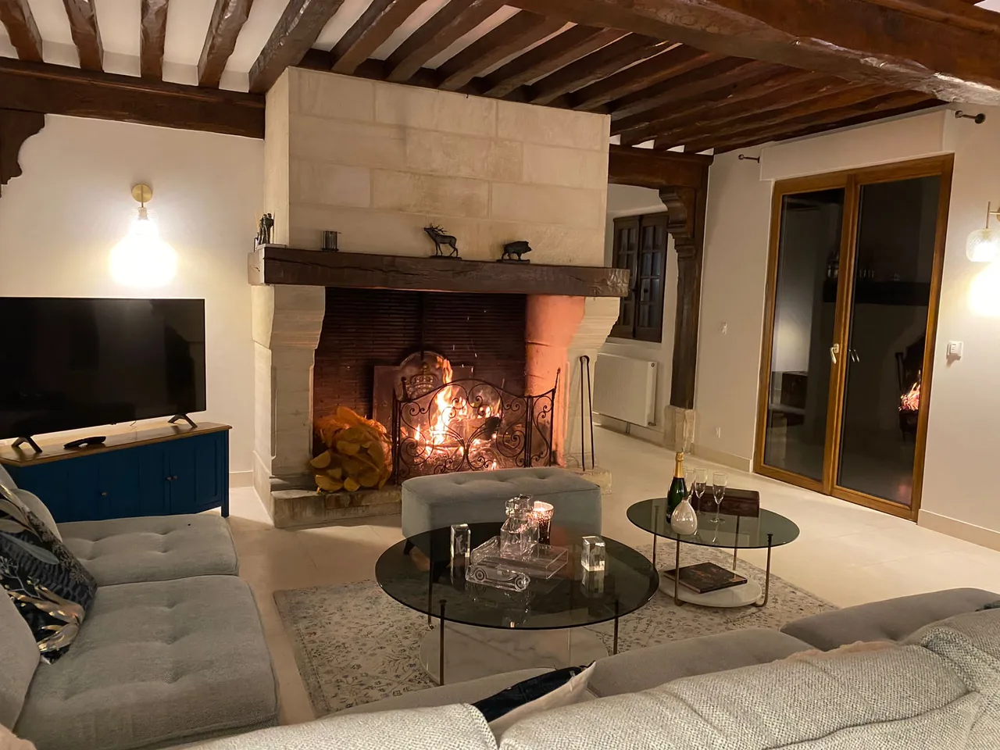

Une chaumière de famille, ouverte à la vôtre
Une maison normande rénovée en 2022, au cœur d’un parc de 3 hectares entre deux haras. Pour se retrouver, en toute saison.
- 15voyageurs
- 7chambres et 7 salles de bains
- 3 hade parc entre deux haras
- 5 kmdu centre de Deauville
Une demeure familiale, gérée en famille
Le Domaine de la Poterie est né d’un attachement à la tradition, à l’hospitalité et à la convivialité. Nous le gérons nous-mêmes, et cela se ressent dans l’accueil comme dans le soin apporté aux détails.
Au cœur du Pays d’Auge, à 5 km de Deauville, la maison vous est réservée en exclusivité : vacances en famille, week-end entre amis, anniversaire ou séminaire en petit comité.

Le plaisir d’être dehors
Aux beaux jours, la vie se prolonge autour de la piscine chauffée, sur la grande terrasse en travertin et sur le court de tennis privé.
- Piscine chauffée à 29 °C du 15 avril au 15 octobre
- Terrasse d’environ 200 m²
- Tennis privé
- 3 hectares de nature
Sept chambres, chacune avec sa salle de bains
Rénovées en 2022, réparties sur trois niveaux, avec leurs salles de bains privatives. De quoi accueillir quinze voyageurs, chacun à son rythme.
Voir les chambres



Au coin du feu
Quand les jours raccourcissent, la maison se resserre autour de la grande cheminée normande en pierre. Longues tablées dans la salle à manger, après-midi de lecture, sauna de la suite après une promenade dans la campagne.
À quelques minutes, Deauville se livre autrement : la plage rien que pour vous à marée basse, le parfum des huîtres au marché, un chocolat chaud face à la mer.

Entre Deauville et le Pays d’Auge
D’un côté la côte Fleurie, ses planches et ses ports. De l’autre les haras, les vergers et les villages à colombages. La maison se trouve entre les deux.
Explorer les environsLa maison en images
Voir toute la galerie